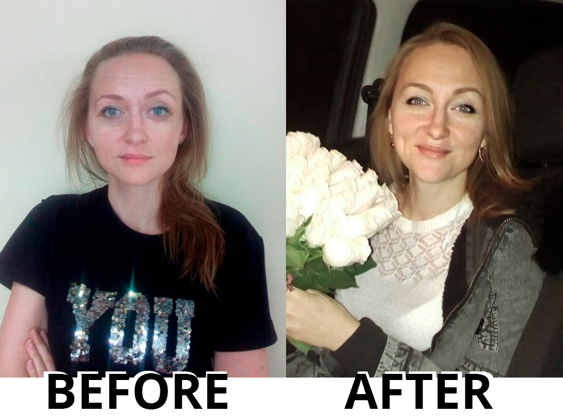
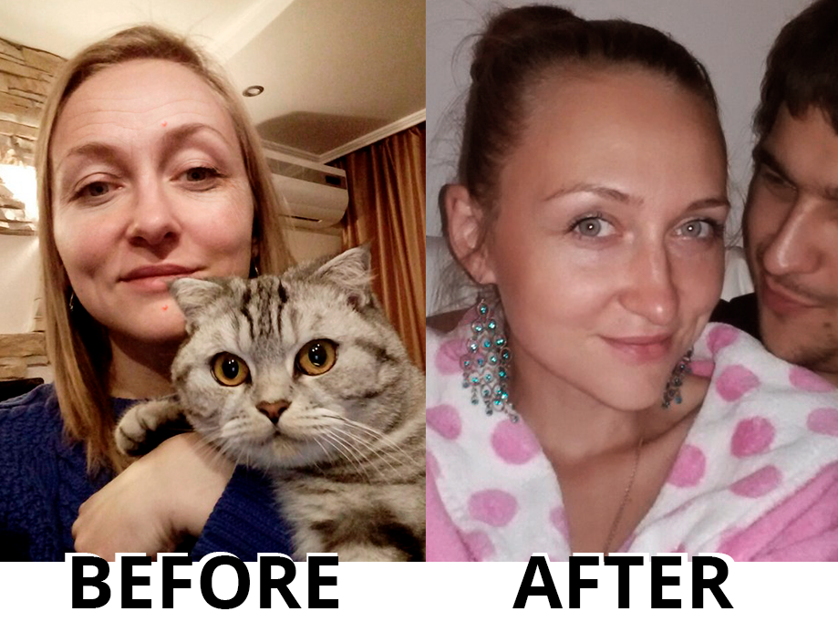

It all started when I got into my 30s and started noticing some fine lines on my face, while my facial contour became a little bit swollen. It seemed that I still looked great, but I got that feeling that I was aging badly. Moreover, I noticed that my husband began to stare at younger women, that he started cominghome later than usual and preferred spending the weekendssomewhere away from home
{kind=link}
But that's not the half of it. After graduating from the university, I immediately got a job as a lawyer at a large holding company. When I was 35, the head of our legal department was going to retire and I was going to take over his job. I had all these degrees, certificates, personal achievements, vast experience in the company, but...The position went to a young wench with no experience and achievements, but having apretty face.
So, I started looking for ways to renew youth. I wanted to know how to get rid of these eye bags, dark circles and crow's-feet and, of course, I wanted to find out how much it would cost. My friends advised lifting or facelift, but:
- Firstly, it is anything, but cheap, even for me.
- Secondly, it could certainly be a kind of promising investments, but I think that in my case they are not very profitable, because of the long recovery period.
I started visiting beauty shops, buying expensive cosmetics, taking face massages and using various cosmetic oils - but when looking in the mirror, I still couldn’t see those changes that I wanted to see. It seems like all these expensive beauty products aregood for everyday care andage-gprevention, but they can do nothing about theexisting signs of aging.
While I was trying to regain my youth, my husband quit spending nights at home at all! Business trips, meetings and other fake excuses…It was obvious that he just didn’t want to come home, that he was not interested in me as in a woman anymore. I was afraid of sinking into depression, which could repel my husband even more. And for another thing, it was difficult to expect that my unstable emotional state could have some positive effect on my expertise of a lawyer. You need a cool head and a sober mind to do the job.
And then I decided to turn to the following folk remedies:
- In the mornings, I washed my face with ice-cubes of green tea. This procedure is intended to unwrinkle crow's-feet and to tighten skin on the eyelids.
- In the evenings, I applied eye lotions with linden leaf and flower tincture to remove swelling, panda eyes and heavy eyelids.
- At weekends, I applied honeymoon masks.
- And I took a contrast shower 2 times a day.
Also, I started eating healthy:
- I ate grated carrot and drank carrot juice at least 3-4 times a week.
- I topped my meals with fresh greens and cooked spinach.
- My daily diet included tomatoes, broccoli, apples, oranges, grapefruits, bananas.
- I ate oatmeal in the mornings.
But as you can guess, the result was almost self-defeating. To put it more correctly, I lost 11 lbs over a month, but this only made matters worse, since my wrinkles became even more visible.
One evening, feeling rather desperate I registered at a females’ discussion board,told my story and finished it by asking:
I have tried everything, so should I just let this ride and stop looking after myself?
I received a bunch of responses, calming and supportive. Many women wrote that hyped beauty products didn’t really help remove eyebags and fine lines. They said that at least I was lucky that the cosmetics didn’t do any harm to me. Investing big bucks in advertising and design, many manufacturers cut costs at the expense of their products quality and as the result we get a hokey-pokey that is really overpriced. But what is more - it turns out that more than half of pharmacy and beauty products sold through distribution contain hormones in the composition and thus they are addictive. That is, while you are using them, you can observe some effect, but when you stop, everything gets worse than it was.

One of the girls from the forum advised me an . I ordered it via the official website. Since I decided to take no chances, I bought only one item - it was rather inexpensive, only .
I’d say that I fell in love with this cream at first sight ... at first sight of my reflection in the mirror. The skin under my eyes became lighter and more elastic, the black circles disappeared and my wrinkles became less noticeable. And this was just after the first application! I felt completely satisfied with and I would not trade it for the world. As soon as I saw the effect, I immediately ordered a package intended for using during a full month.
The is easily applied under the eyes and it vanishes in a few seconds, so I can put my make up and get ready for work without a hitch. But frankly speaking, even if the cream wasn’t that vanishing, I would get up half an hour earlier to apply it – it produces such an effect that it is worth suffering some small inconvenience.

After about a week of using , I regained my self-confidence, since I was thrilled with what I saw in the mirror: no dark circles, bags and lines under my eyes. Girls in our legal department bombarded me with questions, while our men rained compliments upon me. The female part of the team couldn’t believe that I didn’t undergo any plastic surgery and even my mom had some doubts. But I managed to convince them by ordering a couple of extra tubes of – I gave one to my mom and presented others to my friends.
Once I had to go to our head office in NY on a business trip. There was a very important meeting with one of our major partners. When I entered a conference room, he was so impressed that he could hardly answer my greetings. We held the meeting and then went to a restaurant where we spent time talking as if I had known him all my life. Now, we are a couple, and I am divorced from my husband - I don’t need a man who thinks that wrinkles under his wife’s eyes are an acceptable excuse for spending nights away from home.
By the way, at first André (that's the name of my current husband) couldn’t believe that I was well over 30 and I had to show him my driver’s license to prove my age. He thought that I was something under 24 and now he always pokes fun at me saying that I need to have my driver’s license with me if I want to be allowed to a bar to drink cocktails with friends.
So, ladies, I’d say that you hold the keys to the kingdom. We are the best, but we need to take care of our beauty – through using available, certified and effective products rather than through plastic surgery or Botox injections.
You can actually see the effect – it looks like I got a facelift. But I didn’t and that is just the point. This is all thanks to colloidal gold and I think we should be grateful to scientists, who work constantly developing new products for us to look younger. I continue using , but mostly as an anti-aging product.
As I have said, it is easy to use and you can find the instruction on the tube. Just apply it under your eyes and it will do the rest. I almost forgot about another important thing - is hypoallergenic, it contains no perfumes or parabens. Besides, it can be used even in young girls.
We all want to stay beautiful at any age. An attractive and pampered woman is self-reliant and everything is smooth sailing for her, while she is inspired by men’s compliments and admiring glances.
I have no deep wrinkles, but even drunkards can hardly boast such baggy eyes that I had. Thanks to , now I look like a woman.
I'm a little younger than Haley, but I had bigger problems. I work a lot and sleep 4-5 hours a day. As the result, I got dull skin, bags and black circles under the eyes and those disgusting wrinkles. But this cream is an absolute miracle. The know what's what when it comes to cosmetics.
is something unbelievable! I have never purchased anything like this before, so there's nothing to compare with. But I really liked this cream. It makes my eyes shine, so it is the best thing to use when getting ready for a date.
I think I'll put my two cents in. I ordered from an expensive online store of cosmetics. There, it costs two times as much as on the official site. Anyway, it was worth buying. I received it just in the beginning of December, when I was pressed with work, quarterly and annual reports, and then we had all those Christmas parties and school performances- and still I looked like after a two-week vacation in Hawaii. It is a terrific product!
Haley, can I order only from the official website?Or it is possible to do this from anywhere?
Mechelle, as the girls have already said, it is more expensive on other sites. Why to pay more? Moreover, it is really original cream there, but how could you know about other sites?!
I am 51 years old. A natural type of aging, overweight, constant lack of sleep, nervous work (I run my own business) - everything but the kitchen sink. I certainly could afford (and I did) expensive cosmetics, but saw no effect. is a real catch for me. The result is simply staggering. Over many years, it is only now that I began to enjoy how I look.